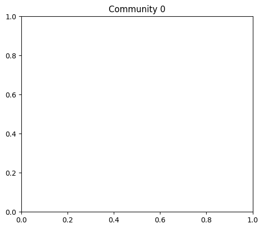

%matplotlib inline
from matplotlib import pyplot as plt
import numpy as np
import pandas as pdCH5. 그래프에서의 머신러닝 문제(커뮤니티와 같은 의미 있는 구조 감지)
graph
ref
커뮤니티와 같은 의미 있는 구조 감지
- 커뮤니티와 클러시트렁을 식별하는 방법
- 커뮤니티를 식별하기 위한 몇 가지 전략
비중첩 커뮤니티 감지 알고리즘: 노드와 커뮤니티 간의 일대일 연결을 제공하여 커뮤니티 간에 노드가 겹치지 않는다.
중첩 커뮤니티 감지 알고리즘: 노드가 둘 이상의 커뮤니티에 포함될 수 있도록 한다.
임베딩 기반 커뮤니티 감지
노드 임베딩에 얕은 클러스터링 기술 적용
임베딩 방법 사용시 노드 간의 유사성을 나타내는 거리를 정의하는 벡터 공간에 노드를 투영
- 바벨 그래프 생성
import networkx as nx
G = nx.barbell_graph(m1=10, m2=4) - 임베딩 알고리즘(HOPE)를 사용해 감소된 밀집 노드 얻기
from gem.embedding.hope import HOPE
gf = HOPE(d=4, beta=0.01)
gf.learn_embedding(G)
embeddings = gf.get_embedding() SVD error (low rank): 0.052092- 클러스터링 알고리즘 실행
from sklearn.mixture import GaussianMixture
gm = GaussianMixture(n_components=3, random_state=0) #.(embeddings)
labels = gm.fit_predict(embeddings)- 다양한 색상으로 강조 표시된 계산된 커뮤니티로 네트워크 그리기
colors = ["blue", "green", "red"]
nx.draw_spring(G, node_color=[colors[label] for label in labels])위 코드 자꾸
'_AxesStack' object is not callable이렇게 오류가 난다. ㅇ아래와 같이 그림이 표시되어야 함
![](.png)
스펙트럼 방법 및 행렬 분해
스펙트럼 클러스터링: 라플라시안 행렬의 고유 벡터에 표준 클러스터링 알고리즘 적용
임베딩 기술이 라플라시안 행렬의 첫 번쨰 k-고유 벡터롤 고려해 얻은 스펙트럼 임베딩을 이용한 임베딩 기반 커뮤니티 탐지 알고리즘의 특별한 경우 (?)
#pip install communitiesfrom communities.algorithms import spectral_clustering
adj=np.array(nx.adjacency_matrix(G).todense())
communities = spectral_clustering(adj, k=3)/tmp/ipykernel_1863787/1958540878.py:3: FutureWarning: adjacency_matrix will return a scipy.sparse array instead of a matrix in Networkx 3.0.
adj=np.array(nx.adjacency_matrix(G).todense())plt.figure(figsize=(20, 5))
for ith, community in enumerate(communities):
cols = ["red" if node in community else "blue" for node in G.nodes]
plt.subplot(1,3,ith+1)
plt.title(f"Community {ith}")
nx.draw_spring(G, node_color=cols)TypeError: '_AxesStack' object is not callable
- 그전에 nx.draw가 오류 날때는 nx.draw_networkx로 바꿔서 하니까 되긴 됬는데.. nx.darw_spinrg은 어떻게 해야하누..